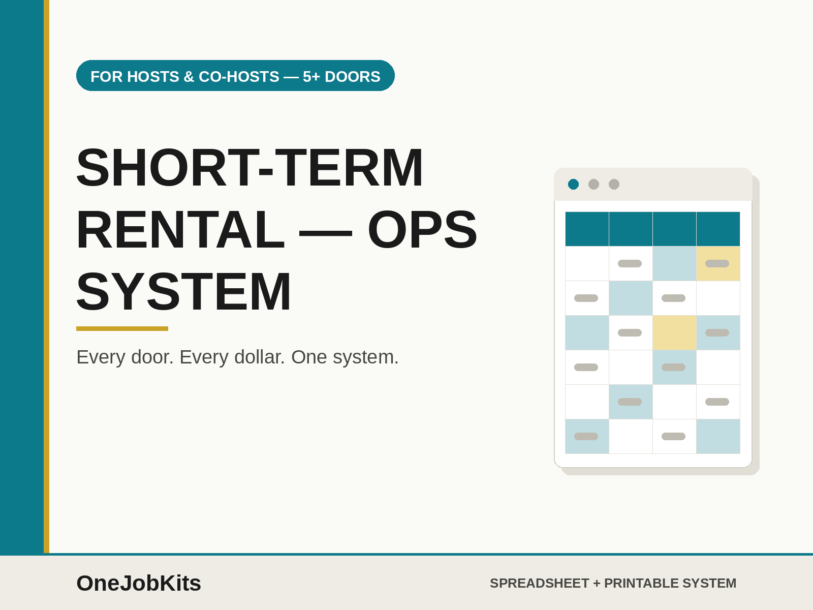

OneJobKits · Kit #13
STR Host Profit System — short term rental spreadsheet

One listing runs fine on memory and a notes app. Five listings don't. Ten break. If you are hunting for a short term rental spreadsheet that survives a real portfolio, you already know where the money leaks: a cleaner nobody confirmed, a repair nobody logged, an owner statement rebuilt from screenshots at midnight.
This page gives you the honest starting point free: the one-property P&L snapshot. Below it is the full back-office system — per-property profit, owner reporting, turnover operations and maintenance in one 12-tab workbook, built for hosts with 5+ doors and co-hosts handling up to 30. It is deliberately not a welcome book; guests never see it. Your numbers finally do. It is an organisational and reporting system only — not accounting, tax or legal advice.
Free download — start with the One-Property P&L Snapshot
The One-Property P&L Snapshot is the per-property profit sheet set up for a single property for one month: gross, platform fees, cleaning, supplies and repairs in — real net, occupancy and margin out. One property, one month, honestly counted — the real net, not the payout number.
Download the free One-Property P&L Snapshot (Excel)Get it on Gumroad instead
What the snapshot does not do: it proves the arithmetic on one door. The full system below runs the portfolio — every door's P&L rolling into one dashboard, owner statements generated from the logs, cleaner turns scheduled and photo-checked, maintenance and inventory tracked before they become surprises.
What's inside the full system
- Operations workbook (spreadsheet, 12 tabs) — START HERE (the 20-minute setup order) · Property Roster — every door with owner, address, bedrooms, sleeps, status (10 doors; 30 on Pro) · Booking Log — 400 rows; net payout calculates from gross and platform fees · Expense Log — 400 rows by property and category · Per-Property P&L — set the month once and every property fills itself: gross, fees, each expense category, total expenses, NET · Portfolio Dashboard — the month at a glance: active doors, gross, net, nights, average occupancy, all-time totals, open maintenance, supplies at reorder point · Occupancy Tracker — nights booked, occupancy %, ADR and RevPAR per property · Owner Statement — print-ready: property, month, management-fee % in; owner payout out · Pricing Review — occupancy and ADR beside your target, with a formula-driven suggested move · Cleaner Schedule — turns, fees, paid dates, photo-check flags · Maintenance Log — vendor, cost, status; open items count onto the dashboard · Inventory & Assets — supply counts with automatic REORDER flags plus the appliance register
- Turnover Checklists (fillable PDF, 7 pages) — cover/how-to, five room sections with per-clean headers, and a Final Walkthrough & Photo-Check Log page with a 12-row log
- Worked example file — the system filled with a fictional 6-door portfolio for Q1 2026 (shown below), with the P&L and Owner Statement set to February 2026 so you see finished numbers
- Pro ($229) adds: the 30-door workbook (roster and P&L/occupancy/pricing views extended, four owner-statement blocks in one file) and the Owner Report Templates client pack — monthly owner report layout, 12-item new-property onboarding checklist and owner communication log, in Word and fillable PDF
A filled example — so you can see the finished thing
The kit's own worked example runs a fictional 6-door portfolio across five markets — Austin, Chicago, Gatlinburg, Destin and Fredericksburg — through Q1 2026. The portfolio is invented; the shape of the data is the point:
| From the example file | What is populated |
|---|---|
| Booking Log | 75 bookings across the quarter, each with property, source, nights, gross and platform fees — net payout calculated per booking |
| Expense Log | 123 expense rows by property and category — cleaning, supplies, repairs & maintenance, management fee, utilities, other |
| Per-Property P&L | Set to February 2026: every door's month fills itself from the logs, with the portfolio total row underneath — the doors that carry the portfolio and the ones that quietly don't |
| Owner Statement | Also set to February: pick the door and the fee percentage, and one owner's statement — gross, deductions, payout — is laid out ready to send |
| Cleaner Schedule · Maintenance · Inventory | The quarter's turns scheduled with fees and photo-checks, maintenance requests logged with vendors and costs, and supplies counted with reorder flags |
That is the system at portfolio scale: nothing about February lives in anyone's memory or message history — it is all in the logs, and the statements write themselves from them.
Who it is for
Hosts with 5+ doors who have outgrown per-listing spreadsheets, and co-hosts and small property managers handling up to 30 doors who want portfolio numbers and owner reporting without property-management-software subscriptions.
Who it is not for
One-listing hosts — a simple spreadsheet is genuinely enough for you, and free ones exist. It is also not a guest welcome book, not dynamic-pricing software and not channel management: it organises and reports from the numbers you enter, and connects to no platform.
Questions buyers ask
- Does it connect to Airbnb or my booking platforms?
- No — there are no platform connections and no macros, deliberately. You log bookings and expenses as they happen (a few minutes a week), and every metric — per-property profit, occupancy, ADR, RevPAR, owner payouts — calculates from what you entered. It is not affiliated with Airbnb or any booking platform, and it is not channel management or dynamic-pricing software.
- How many properties does it handle?
- Standard covers up to 10 doors: the roster, booking log (400 rows) and expense log (400 rows) are sized for a working portfolio, and the P&L and dashboard roll every door up together. Pro extends the roster and the P&L, occupancy and pricing views to 30 doors.
- I co-host for owners — how do statements work?
- The Owner Statement tab is print-ready: pick the property, the month and your management-fee percentage, and the statement lays itself out from the logs — owner, gross, every deduction, and the OWNER PAYOUT line. Pro carries four duplicate statement blocks in one file, so several owners' statements are prepared together, and adds the client pack: a monthly owner report layout, a 12-item new-property onboarding checklist and an owner communication log (Word + fillable PDF).
- How do I decide when to change a nightly rate?
- On the Pricing Review tab, monthly: each property's occupancy and ADR for the month sit beside your current rate and your target occupancy, and a formula-driven suggested move turns the review into a decision instead of a guess. The house rule in the system: one change per property per review, then measure.
- What handles turnovers and cleaners?
- Two pieces. The Turnover Checklists set is a 7-page fillable print — five room sections (Entry & Living, Kitchen, Bathrooms, Bedrooms, Laundry/Restock/Exterior) plus a Final Walkthrough & Photo-Check Log — that lives in each property's cleaning caddy. The Cleaner Schedule tab runs the operation: date, property, cleaner, status, fee, paid date and the photo-check flag, so a confirmed clean is a record, not a hope.
- Is this a guest welcome book?
- No — deliberately not. This is the back office: money, statements, turnovers, maintenance. Guests never see it. (If you need the guest-facing piece, the hub's Airbnb Welcome Book kit is the separate product for that job.)
- What does the free snapshot cover, and what does the full system add?
- The free snapshot is one property for one month: gross, platform fees, cleaning, supplies and repairs in — real net, occupancy and margin out, so you see the true number instead of the payout number. The full system does every door, every month: P&L and dashboard, occupancy and pricing review, owner statements, the turnover system, maintenance and inventory — the whole back office in one workbook.
Prices
Standard (up to 10 doors): $149 · Pro (up to 30 doors + co-host client pack): $229 — one-time payment, digital download. No subscription; the files are yours.
Can't find the kit you need?
We build it. Ask us — first asker gets it at half the shelf price. Tell us the job at onejobkits.com and we will build the kit for it.
Related kits
Please know: this is an organisational and reporting system only — not accounting, tax, or legal advice, and not affiliated with Airbnb or any booking platform. Figures come entirely from the numbers you enter. Short-term-rental rules, taxes and licensing are city- and state-specific — confirm your obligations locally. The example portfolio, owners and numbers are fictional.